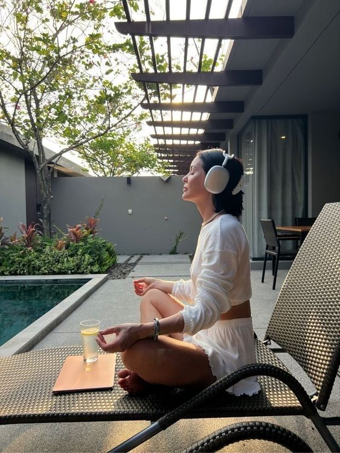

Su içmenin faydaları uzmanlar tarafından gündemden hiç düşürülmeyen bir konu. Çünkü ne kadar çok insan yeterli...

Şehir hayatının yoğunluğu, çoğu zaman mutsuzluk için oldukça önemli bir faktör olabiliyor. Bu durumdan kaçınmak için...
Fazla tuz tüketiminin sağlığa zararlı olduğu yaygın olarak bilinen bir sağlık gerçeğidir. Buna rağmen modern gıda end...

Fazla tuz tüketiminin sağlığa zararlı olduğu yaygın olarak bilinen bir sağlık gerçeğidir. Buna rağmen modern gıda end...
Gün içinde enerjinizin düştüğünü ve yaptığınız şeylere konsantrasyonunuzun azaldığını hissediyor olabilirsi ...

Yeşil çay, sağlıklı yaşamın olmazsa olmazlarından biri olarak anılıyor son yıllarda. Bu yazıyla birlikte yeşil çay...